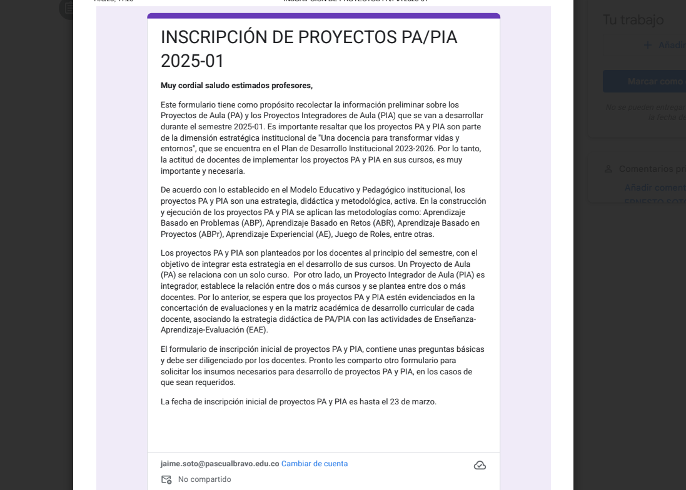

Sistema de Información para el registro, control y consulta de los PA/PIA de I.U. Pascual Bravo
El Proyecto PIA es un prototipo de sistema de información diseñado para facilitar el registro, control y consulta de los Proyectos Académicos (PA) y Proyectos de Investigación Aplicada (PIA) en la Institución Universitaria Pascual Bravo.
Imagen aquí
Video aquí
Audio aquí